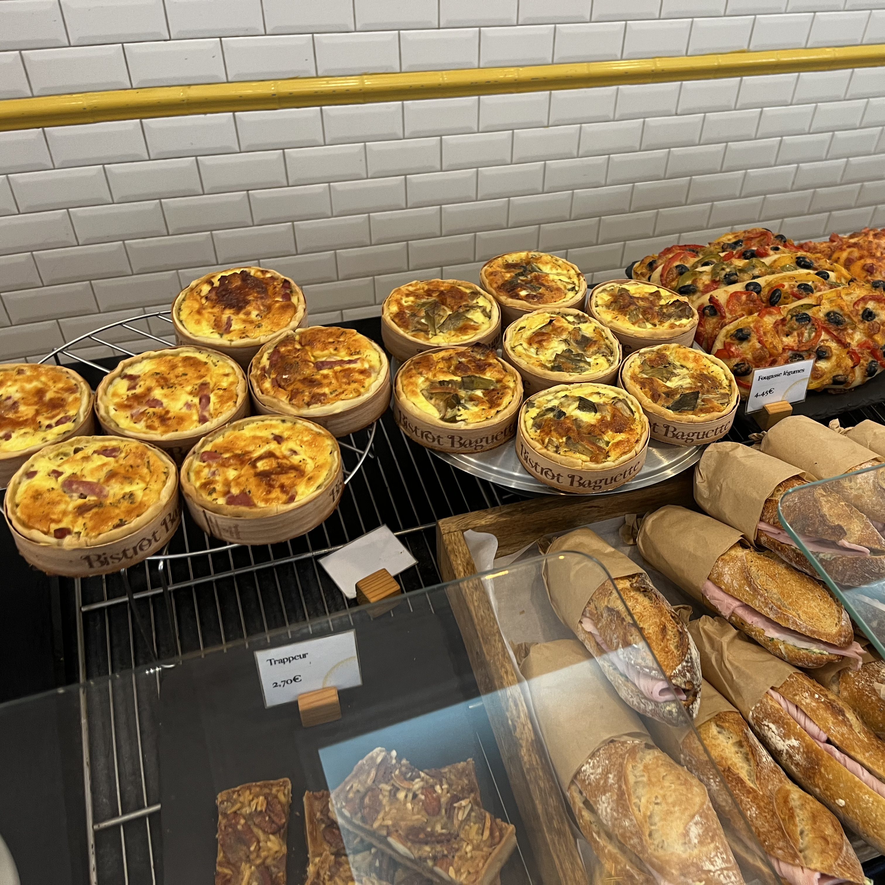
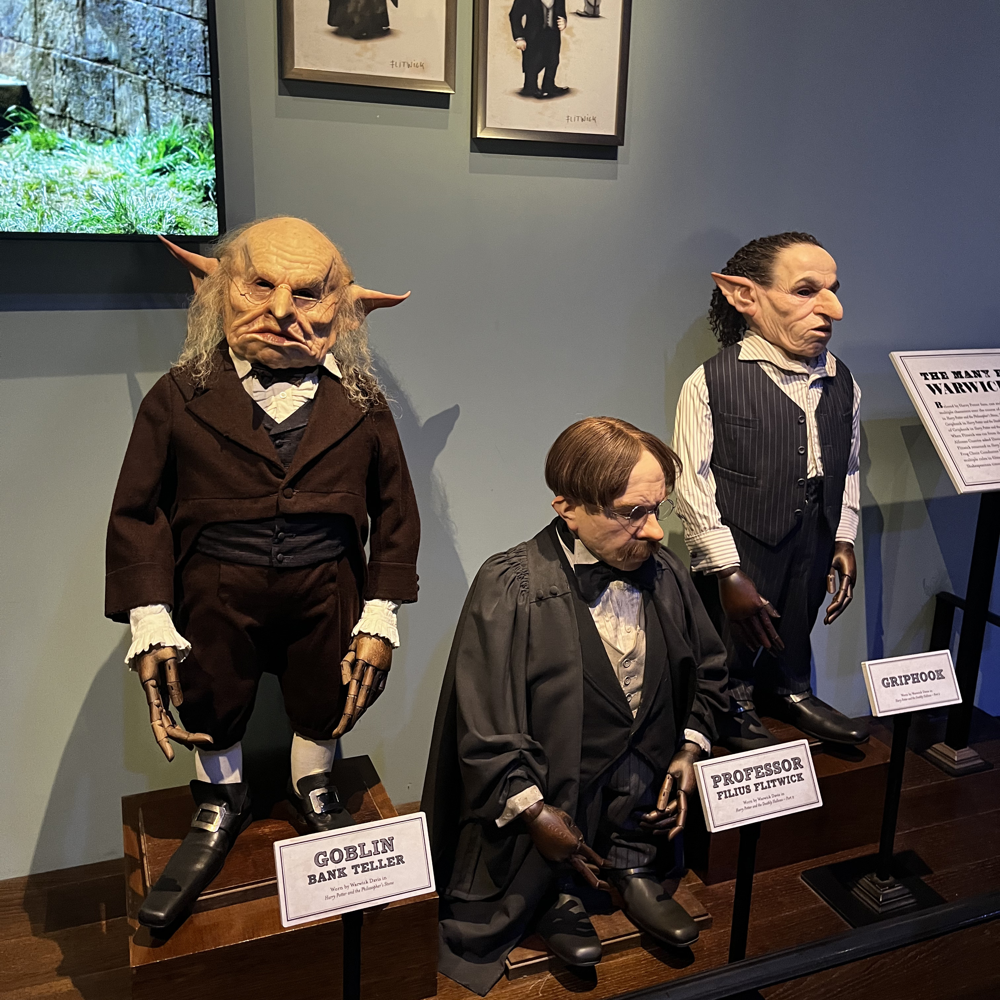
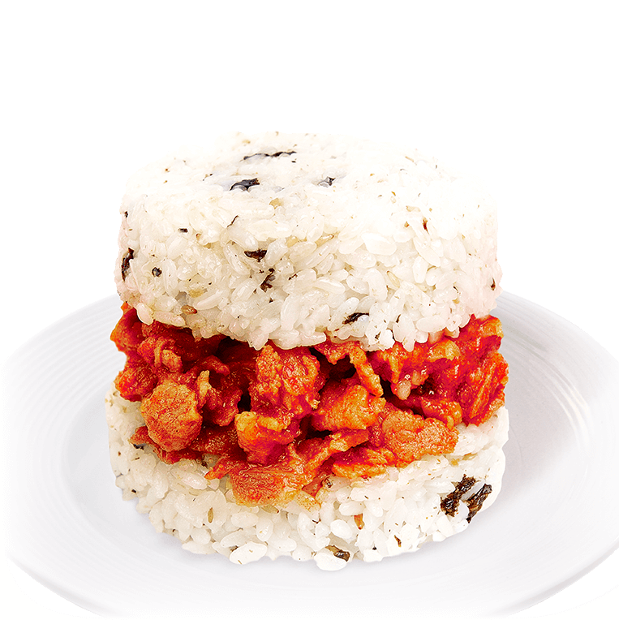
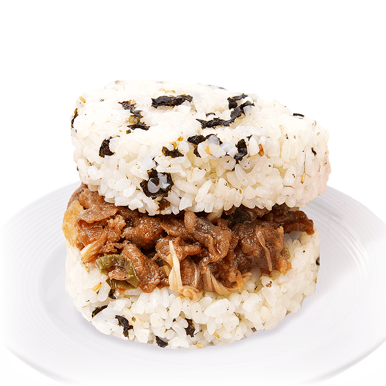
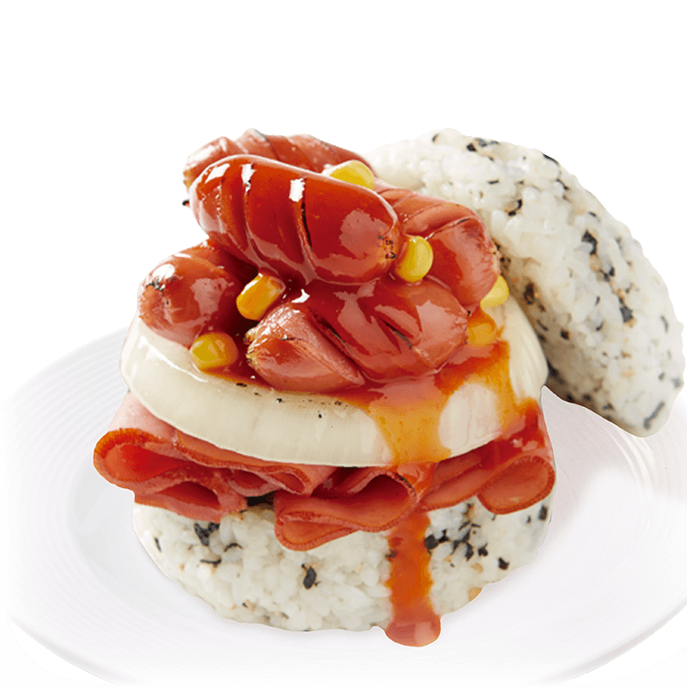
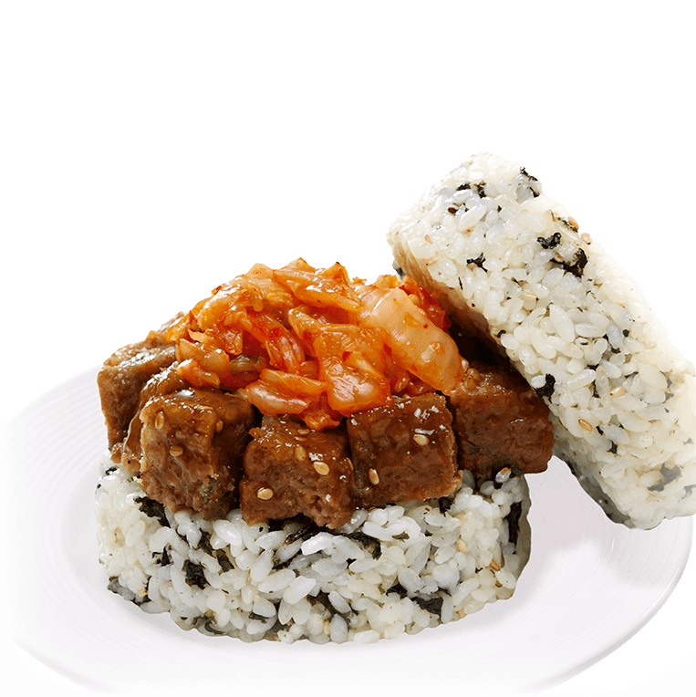
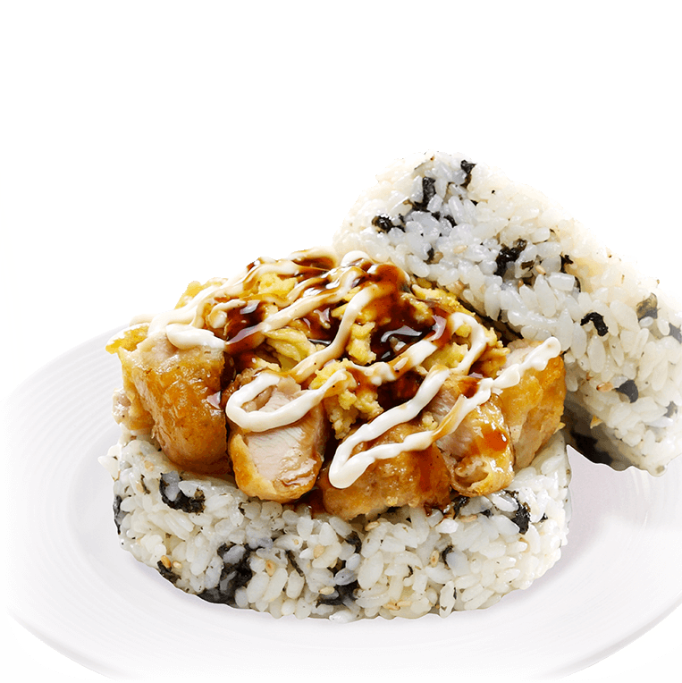
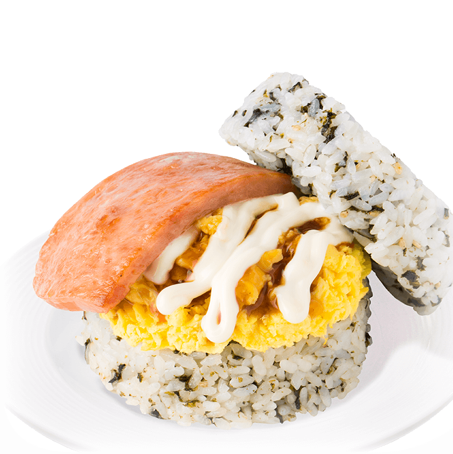

트루먼 쇼
평범해 보이는 일상 속에서도 스스로 질문하고 진짜 삶을 찾아 나가는 모습이 오래 기억에 남는 작품입니다. 익숙한 환경을 당연하게 받아들이지 말고, 내가 원하는 방향을 직접 선택해야 한다는 점을 느끼게 해줬습니다.
봉구스 밥버거를 좋아해요.
백엔드 크루 봉구스입니다. 밥버거 안 먹은지 5년 되었습니다. GitHub와 블로그에 기록을 남기고 있습니다.
| 이름 | 박영규 |
|---|---|
| MBTI | ESTP |
| 취미 | 밥버거 내용물 탐구 |
| 좋아하는 음식 | 마요떡갈비밥버거 김치추가 |
뽕뽕구스 여행기









평범해 보이는 일상 속에서도 스스로 질문하고 진짜 삶을 찾아 나가는 모습이 오래 기억에 남는 작품입니다. 익숙한 환경을 당연하게 받아들이지 말고, 내가 원하는 방향을 직접 선택해야 한다는 점을 느끼게 해줬습니다.
해리 포터는 성장, 우정, 용기의 이야기가 모두 담겨 있어서 오래 좋아하는 작품입니다. 어려운 순간에도 함께하는 사람이 있다는 점과 끝까지 포기하지 않는 태도가 특히 인상 깊었습니다.
오늘 새롭게 배운 것들을 기록합니다.
header, nav, main, section, article, footer 등 시멘틱 태그의 역할과 사용법을 배웠다.